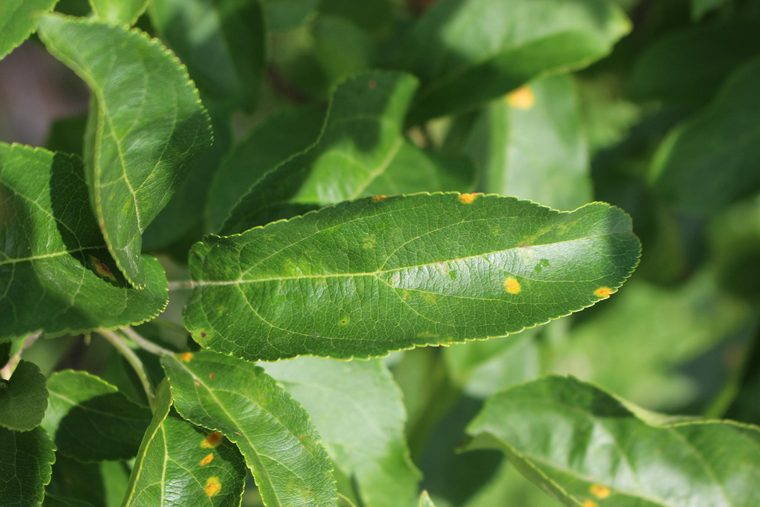

사과나무 잎 이미지를 4개 병해 클래스로 분류합니다. 아래 샘플을 누르면 즉시 결과가 표시되고, 직접 이미지를 올리면 ResNeSt101e 모델(ONNX)이 실시간으로 추론합니다. 모델이 슬립 상태면 첫 호출에 최대 1분이 걸릴 수 있습니다.
이미지 입력

sample 1, apple leaf
AI 진단 결과
모델 ResNeSt101e, 이종 지식 증류(ConvNeXt→ResNeSt)
데이터 Kaggle Plant Pathology 2020 (FGVC7)
성능 private LB ROC-AUC 0.979(late submission). 전체 학습 데이터로 다시 학습한 이 데모 모델의 점수로, 5폴드 모델 비교의 0.977과 다릅니다.
샘플 결과는 사전 계산값이며, 업로드 추론은 Hugging Face Space에서 실행됩니다.